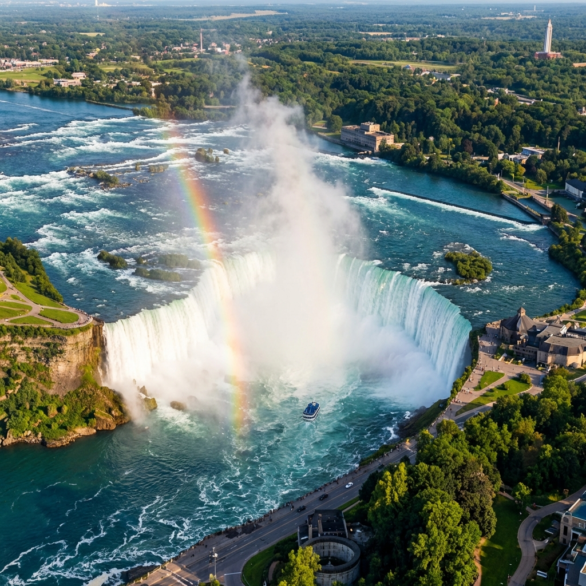
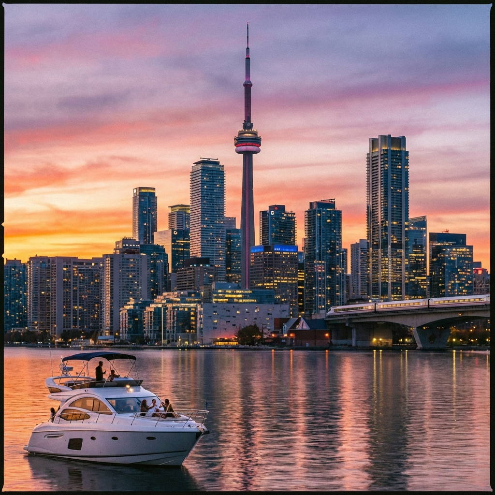
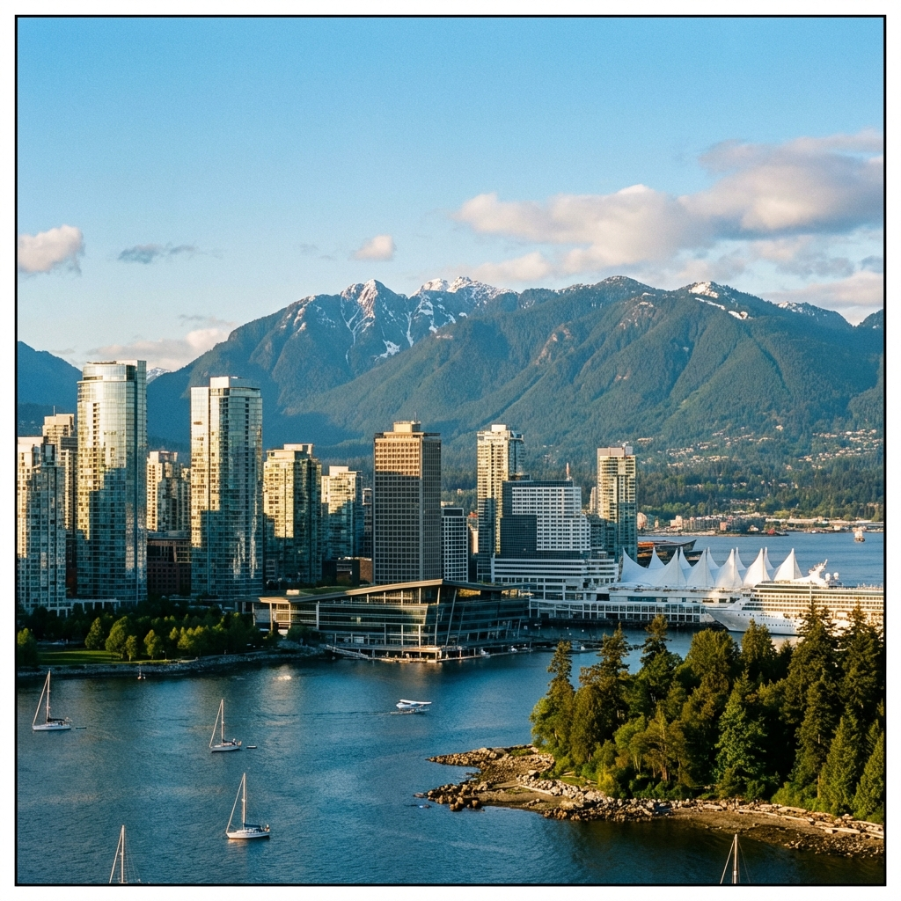
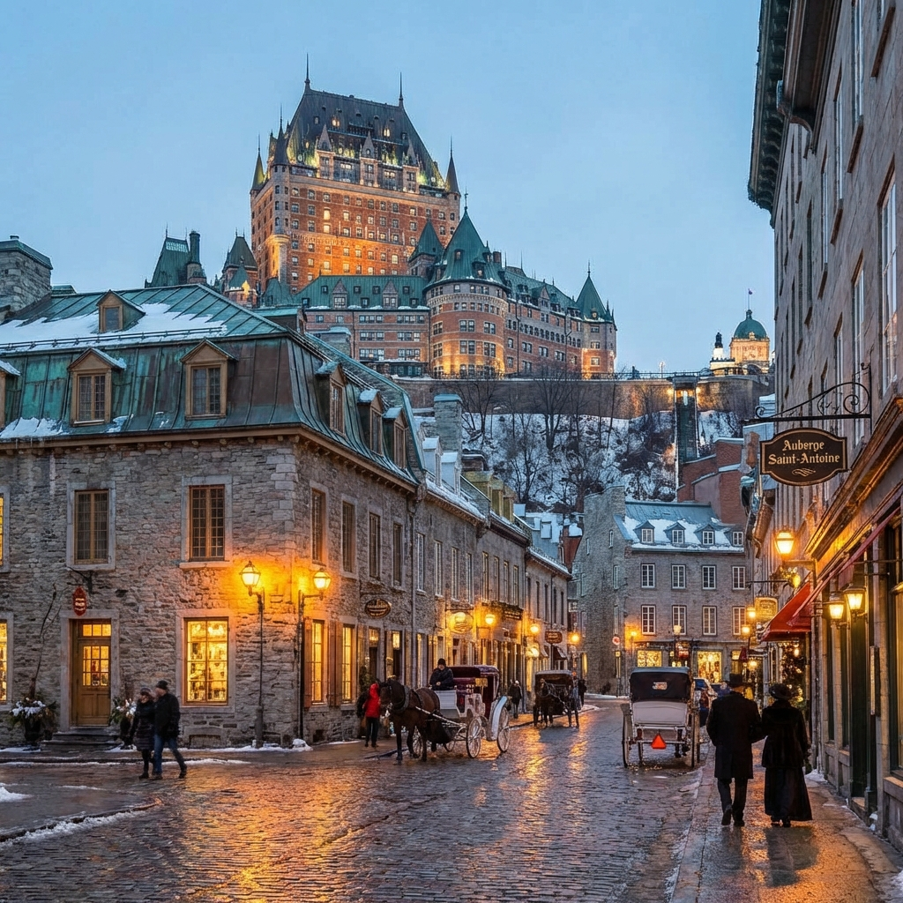
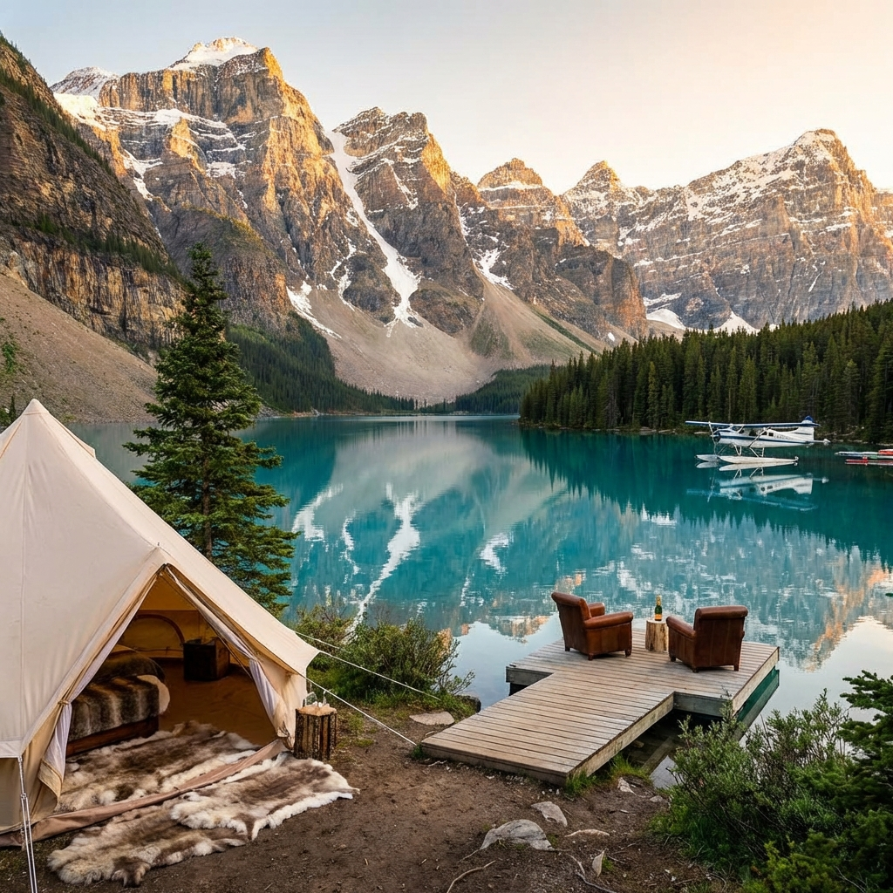
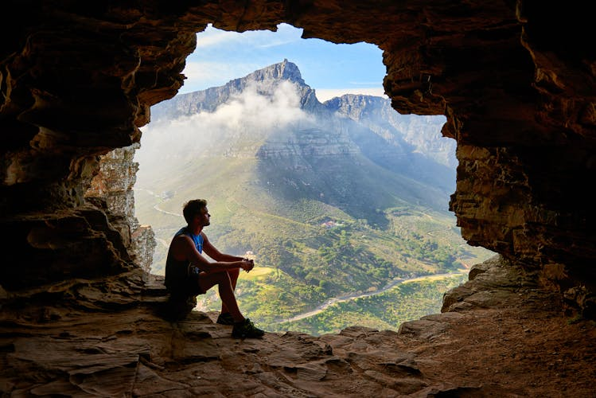
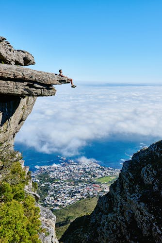

Canada is a land of breathtaking contrasts and infinite horizons, where pristine
wilderness meets cosmopolitan sophistication. As the world's second-largest country by area, it offers an
extraordinary diversity of landscapes—from the turquoise glacial lakes of the Rockies to the vibrant
multicultural streets of Toronto, from the European charm of Quebec City to the rugged Pacific coastline of
British Columbia. This comprehensive guide explores 8 essential Canadian destinations that capture the nation's
majestic natural beauty, rich cultural heritage, and warm hospitality. Whether you seek adventure in the wild or
luxury in the city, Canada promises experiences that will stay with you forever.
1. Banff National Park: The Crown Jewel of the Rockies

Nestled in the heart of the Canadian Rockies, Banff National Park is a UNESCO World
Heritage site that epitomizes the raw, untamed beauty of the Canadian wilderness. Established in 1885 as
Canada's first national park, Banff spans over 6,600 square kilometers of mountain peaks, glacial lakes,
dense coniferous forests, and alpine meadows.
2. Niagara Falls: Nature's Thundering Spectacle

Straddling the border between Ontario and New York State, Niagara Falls is one of the
world's most powerful and awe-inspiring natural wonders. The Canadian side offers the superior vantage
point, providing a full frontal view of the massive Horseshoe Falls, where over 750,000 gallons of water
thunder over the edge every second.
3. Toronto: Canada's Cosmopolitan Powerhouse

Toronto is Canada's largest and most diverse city, a vibrant metropolis where over 140
languages are spoken and more than half the population was born outside Canada. This multiculturalism is
reflected in the city's neighborhoods, from the aromatic spice markets of Little India to the colorful
street art of Kensington Market.
4. Vancouver: Where Mountains Meet the Sea

Vancouver is consistently ranked as one of the world's most livable cities, and it's easy
to see why. Nestled between the Pacific Ocean and the snow-capped peaks of the North Shore Mountains,
Vancouver offers an unparalleled combination of urban sophistication and outdoor adventure.
5. Quebec City: A Slice of Europe in North America

Quebec City is the only fortified city north of Mexico, a UNESCO World Heritage site that
transports you to 17th-century France. Walking through the narrow cobblestone streets of Old Quebec
(Vieux-Québec), past stone buildings with steep copper roofs and colorful shutters, you could easily believe
you've been transported across the Atlantic.
6. Jasper National Park: Wilderness in Its Purest Form

Jasper National Park, the largest national park in the Canadian Rockies, offers a
wilderness experience that is more remote and rugged than its southern neighbor, Banff. Covering over 11,000
square kilometers, Jasper is a haven for wildlife, including grizzly bears, elk, caribou, and wolves.
7. Montreal: Where French Flair Meets North American Energy

Montreal is Canada's cultural capital, a city where European sophistication blends
seamlessly with North American dynamism. As the second-largest French-speaking city in the world after
Paris, Montreal offers a unique cultural experience where you can start your day with a croissant and café
au lait in a charming bistro.
8. Ottawa: The Capital of Natural Beauty

Ottawa, Canada's capital city, is a city of surprising charm and beauty. Situated at the
confluence of three rivers—the Ottawa, Gatineau, and Rideau—the city combines the grandeur of national
institutions with the accessibility and friendliness of a smaller urban center.
The Endless Canadian Adventure: Canada is a country of
superlatives—vast, diverse, and endlessly beautiful. From the thundering power of Niagara Falls to the serene
wilderness of Jasper, every journey through Canada reveals new wonders. Safe travels and welcome to Canada!
The Signature of Excellence
Why Choose Luxe Voyages?
Curated Excellence
Every destination and accommodation is hand-selected to meet the
highest standards of luxury.
Direct Booking
Book directly with verified premium providers to ensure the best rates
and exclusive perks.
Global Legacy
Our worldwide presence ensures you have premium support wherever your
journey takes you.
Guest Experiences
From Our Global Travelers
"Luxe Voyages didn't just book a trip; they crafted an unforgettable experience. Every detail
was handled with unparalleled professionalism."
Julian Montgomery
Verified
Global
Traveler